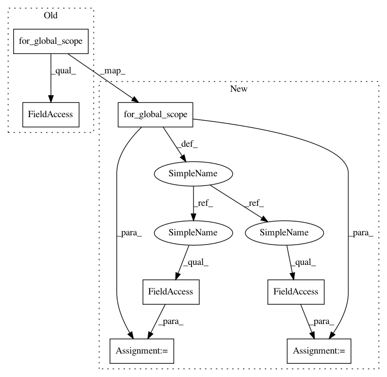

b53ada312780b6686da35a0aa107c628a192982d,src/python/pants/bin/local_pants_runner.py,LocalPantsRunner,_run,#LocalPantsRunner#,320
Before Change
engine_result = PANTS_FAILED_EXIT_CODE
goal_runner_result = PANTS_FAILED_EXIT_CODE
streaming_handlers = self._options.for_global_scope().streaming_workunits_handlers
callbacks = Subsystem.get_streaming_workunit_callbacks(streaming_handlers)
streaming_reporter = StreamingWorkunitHandler(self._scheduler_session, callbacks=callbacks)
with streaming_reporter.session():
After Change
engine_result = PANTS_FAILED_EXIT_CODE
goal_runner_result = PANTS_FAILED_EXIT_CODE
global_options = self._options.for_global_scope()
streaming_handlers = global_options.streaming_workunits_handlers
report_interval = global_options.streaming_workunits_report_interval
callbacks = Subsystem.get_streaming_workunit_callbacks(streaming_handlers)
streaming_reporter = StreamingWorkunitHandler(self._scheduler_session, callbacks=callbacks, report_interval_seconds=report_interval)
with streaming_reporter.session():
In pattern: SUPERPATTERN
Frequency: 3
Non-data size: 7
Instances
Project Name: pantsbuild/pants
Commit Name: b53ada312780b6686da35a0aa107c628a192982d
Time: 2020-01-13
Author: greg.shuflin@toolchain.com
File Name: src/python/pants/bin/local_pants_runner.py
Class Name: LocalPantsRunner
Method Name: _run
Project Name: pantsbuild/pants
Commit Name: 4980b0998e49330bec5b919469287c5c54a1784e
Time: 2015-08-14
Author: john.sirois@gmail.com
File Name: src/python/pants/bin/goal_runner.py
Class Name: GoalRunner
Method Name: setup
Project Name: pantsbuild/pants
Commit Name: a403445f62ebb316ed246b11083770613acb447f
Time: 2020-09-04
Author: greg.shuflin@toolchain.com
File Name: src/python/pants/pantsd/pants_daemon.py
Class Name: PantsDaemon
Method Name: _pantsd_logging
Project Name: pantsbuild/pants
Commit Name: b53ada312780b6686da35a0aa107c628a192982d
Time: 2020-01-13
Author: greg.shuflin@toolchain.com
File Name: src/python/pants/bin/local_pants_runner.py
Class Name: LocalPantsRunner
Method Name: _run